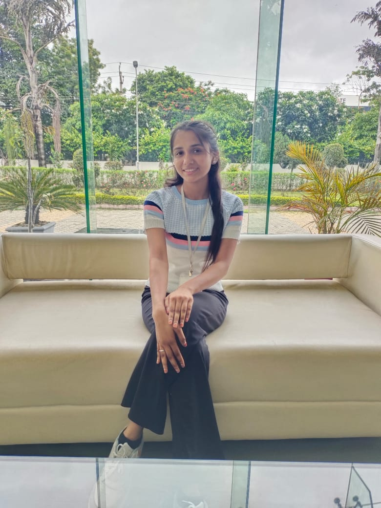
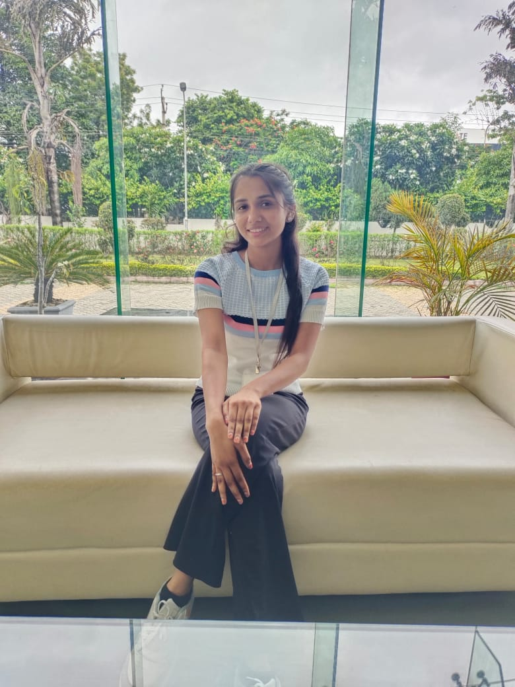
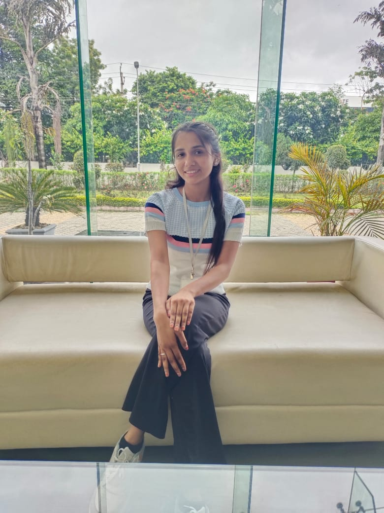

Web
Developer.
Frontend Developer. I like to craft solid and scalable frontend products with
great user experiences.

Frontend Developer. I like to craft solid and scalable frontend products with
great user experiences.
I'm probably not the typical designer positioned behind an Illustrator
artboard adjusting pixels, but I design.Immersed in stylesheets
tweaking font sizes and contemplating layouts is where you'll find me
(~_^).I'm committed to creating fluent user experiences while staying
fashionable.
As a passionate web developer with 18 months of experience, I have immersed
myself in software development through a comprehensive diploma program. I’ve honed my
skills in HTML, CSS, JavaScript, and React, creating responsive and user-friendly web applications.
In addition to web development, I have a solid understanding of databases and data structures and algorithms (DSA).
My participation in hackathons has further enhanced my problem-solving skills and ability to collaborate on innovative projects.
Excited to continue my journey, I focus on building high-quality applications that enhance user experiences while continuously learning and
adapting to new technologies. I’m eager to contribute my skills to dynamic teams and projects.
I've built products for companies and businesses around the
globe ranging from marketing websites to complex solutions
and enterprise apps with focus on fast, elegant and
accessible user experiences.